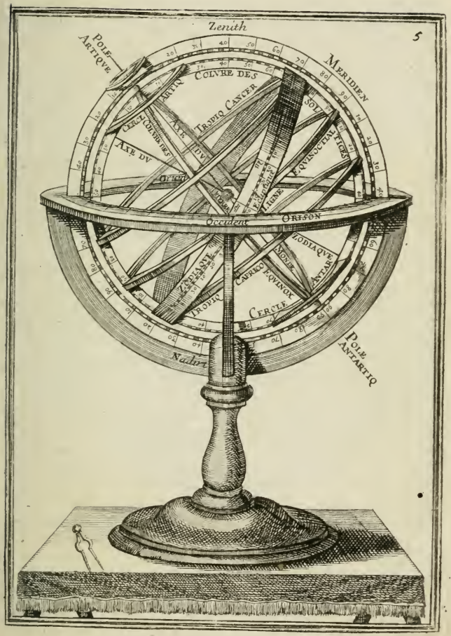

A Esfera de Armilar: O Grande Instrumento Celeste da Idade Média e da Era de Ouro da Ciência

Origem e evolução histórica
A primeira versão da esfera de armilar teve origem na cultura islâmica, com astrônomos como Al‑Biruni e Al‑Khwarizmi, que refinavam os conceitos de Ptolomeu. No século XII, a esfera ganhou sua forma clássica graças ao trabalho de João de Nápoles, que adaptou o design antigo com a inclusão de anéis de declinação e de eclíptica. A partir daí, a esfera espalhou‑se rapidamente por todo o mundo cristão, graças aos manuscritos e ao comércio de artefatos científicos.
Ao longo dos séculos, diversas universidades e escolas de aritmética – como a Universidade de Salamanca e a Escola de Paris – construíram suas próprias esferas, cada uma com variações de tamanho e complexidade. Em tempos de transição para a Idade Moderna, a esfera continuou a desempenhar um papel crucial, sendo empregada por estudiosos como Roger Bacon, que a utilizou para calcular a distância da Terra ao Sol.
O design técnico da esfera de armilar
A estrutura da esfera consiste em anéis de bronze ou madeira, que são fixados em pontos de interseção que refletem as coordenadas celestes. Os anéis mais importantes são:
- Equador – que representa a linha do equador celeste, dividindo o céu em hemisfério norte e sul.
- Eclíptica – que descreve o caminho aparente do Sol ao longo do ano, fundamental para calcular as posições planetárias.
- Círculos de Declinação – que indicam a inclinação dos astros em relação ao equador.
- Anéis de Longitude – que permitem a medição do ângulo longitudinal de qualquer ponto celeste.
A maioria das esferas modernas possui um mecanismo de rotação livre que facilita a orientação e a leitura das coordenadas.
Esfera de Armilar na Idade Média: Educação e Cultura
Na Idade Média, a esfera de armilar era um símbolo de conhecimento e autoridade. Foi incorporada no currículo de escolas de artes e universidades, onde os estudantes aprendiam a usar o instrumento para ensinar sobre a geometria do espaço e a natureza do universo. Em escolas de monastério, a esfera também servia como ferramenta para calcular a hora de oração, pois sua estrutura exibia o ponto de passagem do Sol, fundamental para a liturgia.
Além do uso acadêmico, a esfera de armilar se tornou objeto de arte. Muitos artistas, como Leonardo da Vinci, incluíram representações da esfera em seus desenhos e pinturas, mostrando não apenas a curiosidade científica, mas também a busca pela estética na ciência.
A esfera na Era da Revolução Científica
Com a ascensão de cientistas como Copérnico, Kepler e Galileo, a esfera de armilar ainda manteve sua relevância. Copérnico, por exemplo, utilizou o instrumento para demonstrar o modelo heliocêntrico, exibindo como os planetas orbitaram ao redor do Sol ao invés de da Terra. Enquanto Kepler desenvolvia suas leis de Kepler, a esfera permitia a visualização das órbitas elípticas.
Mesmo com o advento dos telescópios, a esfera continuou a ser uma ferramenta de referência, ajudando os astrônomos a calibrar e a medir as posições dos objetos celestes antes que a precisão das novas tecnologias tornasse a esfera obsoleta.
Esfera de Armilar no Mundo Moderno
Hoje, a esfera de armilar não é mais usada para cálculos científicos, mas continua viva em museus, exposições de ciência e na formação de estudantes em astronomia. Algumas universidades, como a Universidade de Cambridge, mantêm esferas originais em sua coleção, permitindo que os alunos possam compreender a evolução do método científico.
Além disso, a esfera de armilar tem ganhado popularidade em formatos digitais. Softwares de simulação e aplicativos de realidade aumentada trazem a esfera para a tela do celular, permitindo que os usuários explorem o céu de maneira interativa. Isso tem sido particularmente útil em aulas de geografia, física e história da ciência, criando um vínculo entre o passado e o presente.
Legado Cultural e Inspiração
A esfera de armilar inspirou gerações de cientistas, artistas e filósofos. Seu design elegante e funcional simboliza a busca humana por compreender o universo, e seu impacto cultural se estende além da astronomia. No mundo do design industrial, o conceito de anéis interligados inspirou a criação de objetos com movimento suave e harmonia visual, como relógios e móveis de linha moderna.
Além disso, a esfera de armilar aparece em vários filmes, documentários e obras de ficção científica, servindo como metáfora para a complexidade do cosmos. Por isso, permanece uma peça icônica nas narrativas sobre a expansão do conhecimento humano.
Conclusão
Em resumo, a esfera de armilar representa um marco na história da ciência, unindo geometria, astronomia e arte em uma estrutura fascinante. Embora tenha sido superada pelos avanços da tecnologia, seu legado continua vivo nas aulas de ciência, nas exposições culturais e nas mentes curiosas de quem busca entender o cosmos. Se você tem interesse em astronomia ou na história do pensamento científico, a esfera de armilar oferece um portal visual e interativo para o passado, permitindo que os estudantes e o público em geral façam uma viagem de volta aos dias de grande descoberta e curiosidade que ainda ecoa em nossa cultura atual.